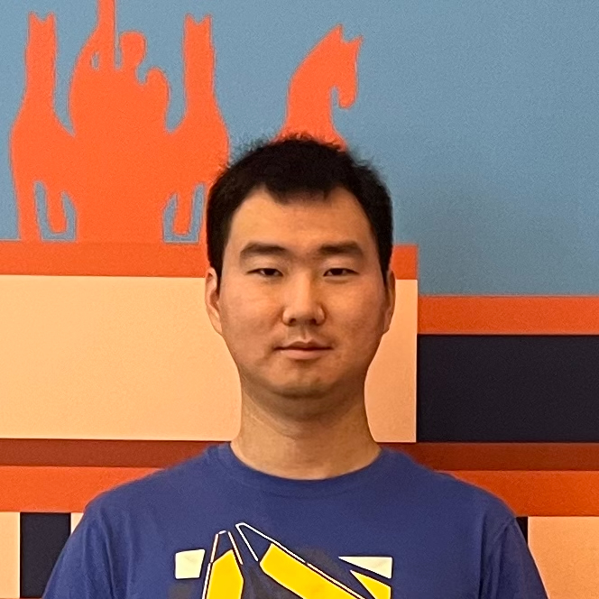
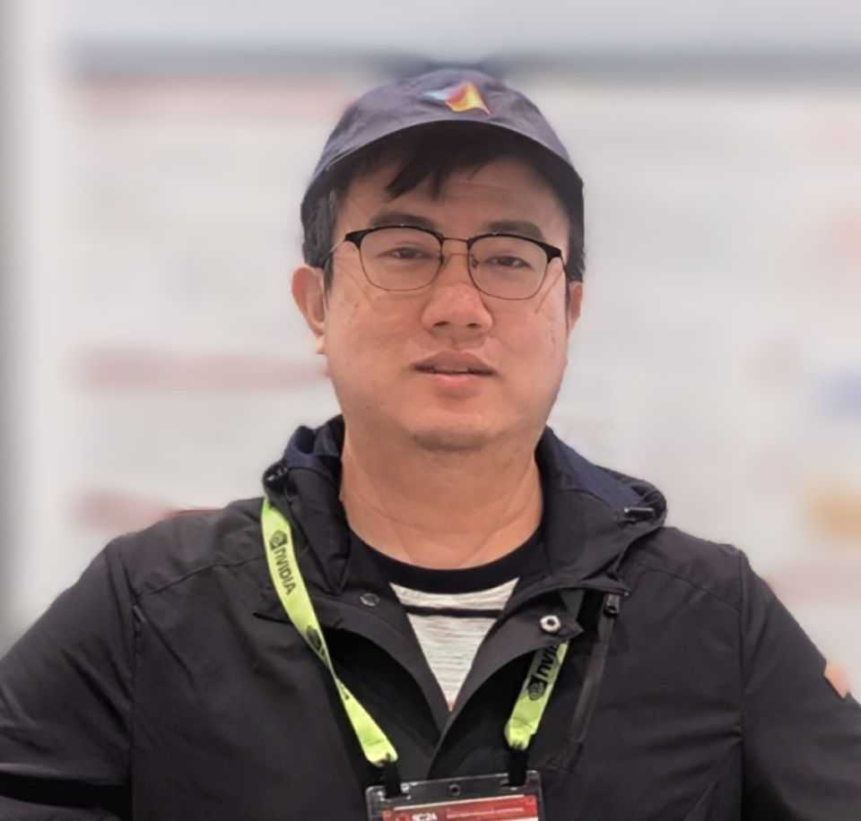
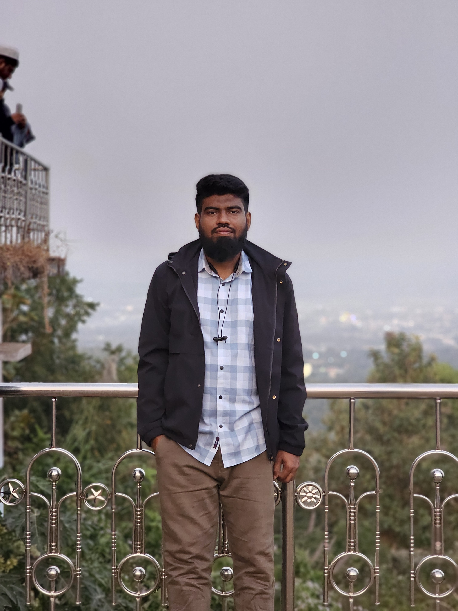
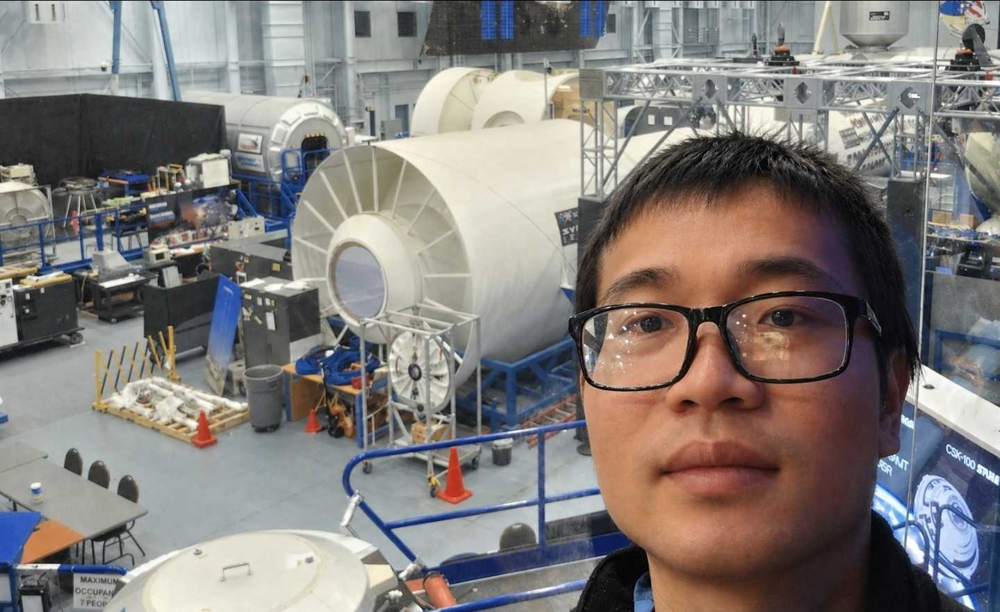
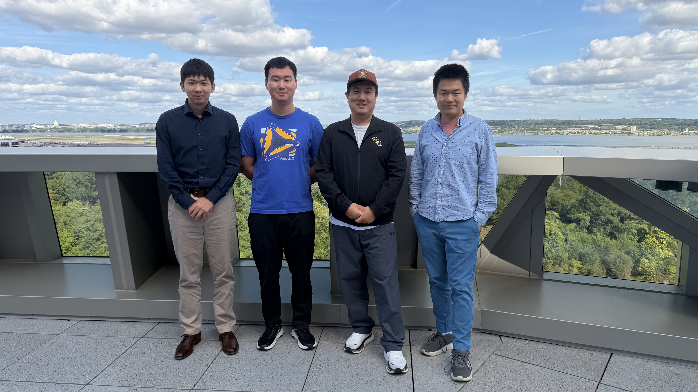

Students

Longtao Zhang (Ph.D., 2023–present) received his B.Eng. from Hunan University. He is an ICPC/CCPC silver medalist. His research interests include high-performance computing, data compression, and algorithms.

Ruoyu Li (Ph.D., 2023–present) earned his B.A. from China University of Mining and Technology and his M.S. from the University of Pittsburgh. He had five years of industry experience as a senior software engineer before joining FSU. His research covers high-performance computing, data compression, machine learning, and AI for healthcare.

Md Mehrab Hossain Opi (Ph.D., 2026–present) earned both his B.Sc. and M.Sc. in Computer Science and Engineering from Khulna University of Engineering & Technology (KUET). He was a finalist in the 2024 ICPC World Finals and is a recipient of the Florida State University Graduate School Legacy Fellowship, which supports newly admitted doctoral students for up to five years. His research focuses on high-performance computing, tensor algebra, and efficient machine learning systems.

Chuan Yu (Ph.D., 2026–present) earned a bachelor's degree in Computer Science from Tongji University and a master's degree in Computer Engineering from National University of Singapore (NUS). At Tongji, he received the National Scholarship for the 2016–2017 academic year and was named Outstanding Student of the Academic Year in both 2015–2016 and 2016–2017; he also won a First-Class Prize (ranked 11th in province) at the 2012 Chinese Physics Olympiad.
Zhuoxun Yang (M.S., 2024–present) earned his B.S. from Peking University.
Former Students
Nicholas Simmons (M.S., 2024 Summer Intern).
